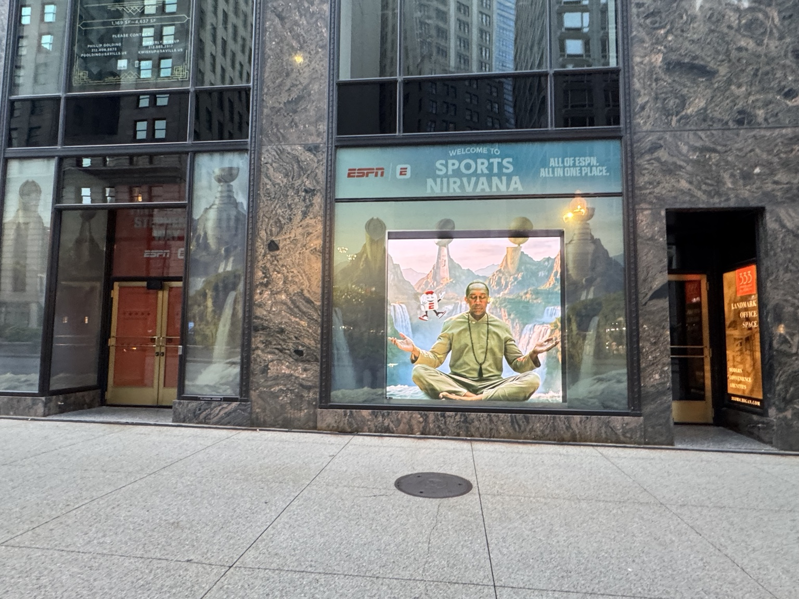
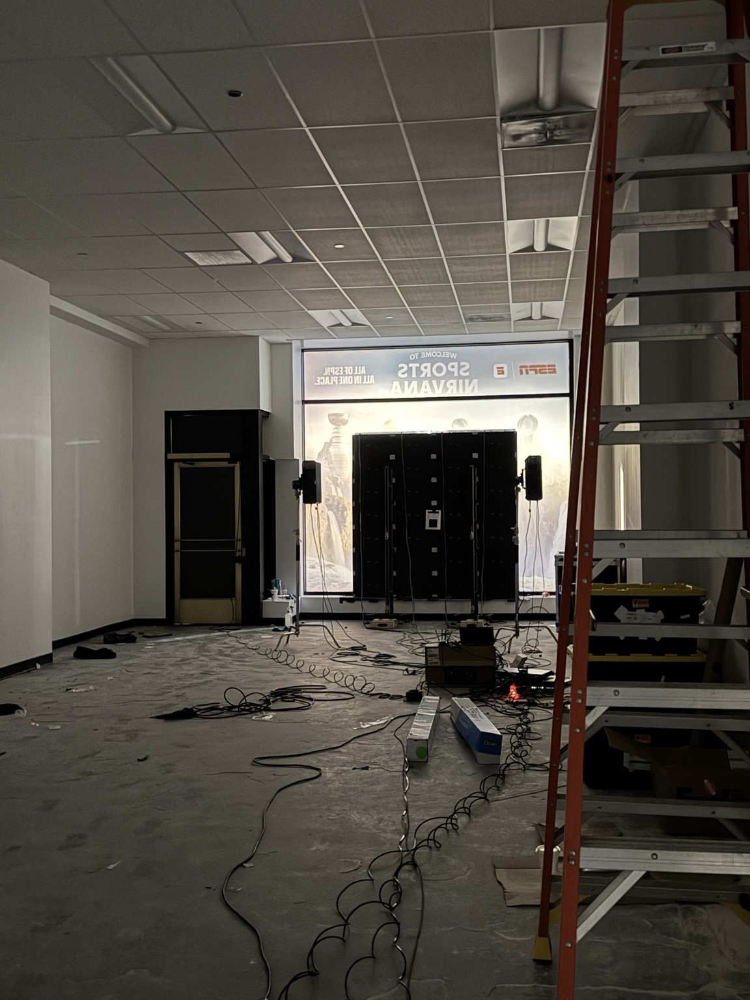
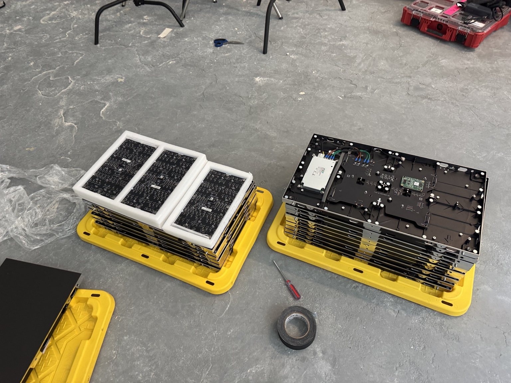
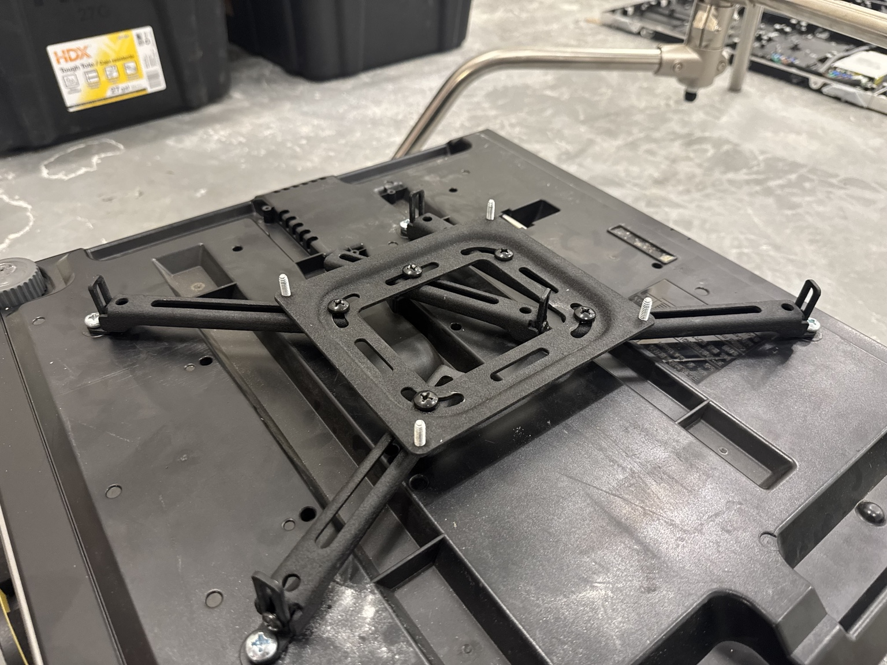
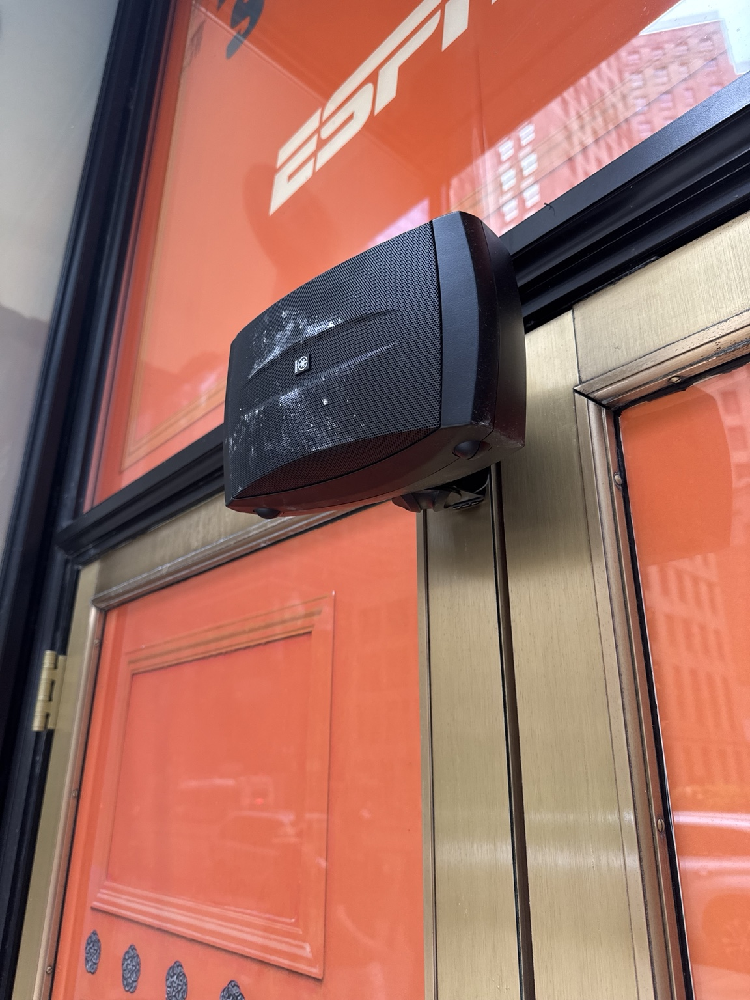
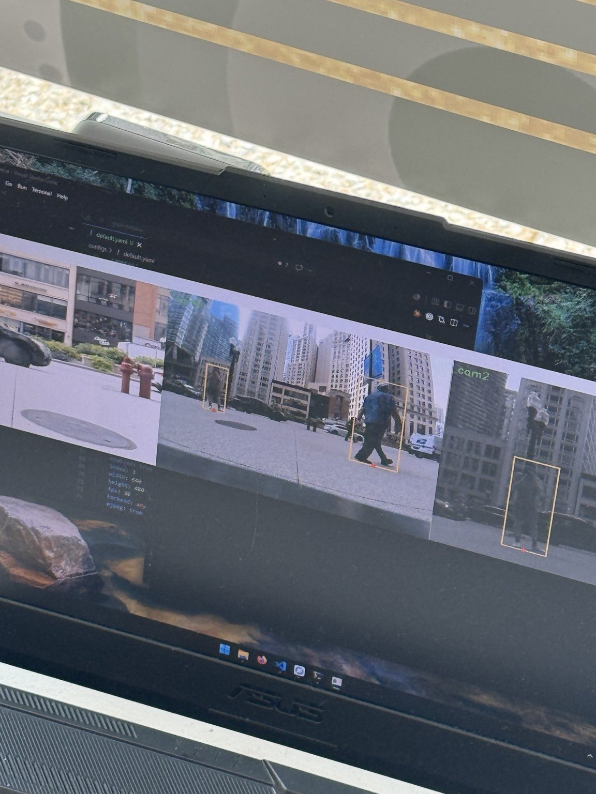

ESPN Sports Nirvana — Visual Feeder
Chicago · 2026

Overview
ESPN Sports Nirvana was a multi-day storefront activation at 333 N Michigan Ave that I supported with Visual Feeder. Large-format scenic window graphics used projector-based illumination and subtle moving texture around a central modular LED wall. Camera-based pedestrian detection and triggered voice playback added an interactive layer for people passing by.
My Role
I was Visual Feeder's primary on-site support contact during portions of the build. I coordinated access with building staff and subcontractors, measured the storefront windows for graphics, and helped keep overlapping installation work moving. I supported LED-panel placement and assembly, assembled projector stands and mounts, helped position and align projectors, and connected some networked and video equipment from provided diagrams. I handled the speaker installation and tested the interaction and voice playback during system checks.
Building the Installation
The space moved from a staged storefront to a layered installation as the window treatment, LED display, projector rigs, and audio came together. I worked around multiple crews, helped with practical placement, and learned LED-panel orientation and basic service procedures so I could support follow-up maintenance if needed.



Audio + Interaction
I handled the storefront speaker installation: adapting the mounts to the entrance structure, positioning the speakers, routing and terminating cable, connecting the audio chain, then testing playback and adjusting levels. During system checks, I tested how the provided pedestrian-detection system responded to passersby and triggered voice playback.


Outcome
This project brought together the parts of creative technology I enjoy most: physical installation, AV systems, interactive media, and practical troubleshooting. My work was at the point where the creative plan had to fit the room, the hardware, and the people building it.